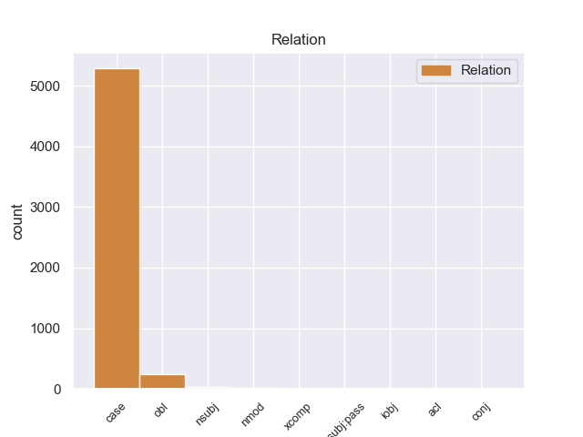
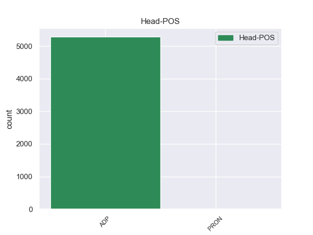
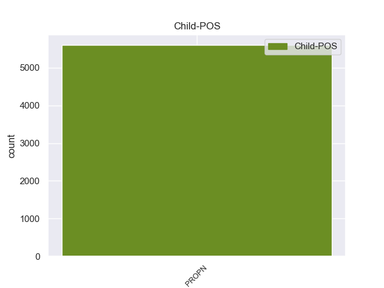

Distribution of features within this leaf



Agreement Rules sorted by frequency.
- When the dependent token is the case marking(case) of the head token, and the head token is ADP and the dependent token is PROPN.
1 उन्होंने _ _ _ _ 0 _ _ _
2 यहां _ _ _ _ 0 _ _ _
3 वेटिकन _ _ _ _ 0 _ _ _
4 दूतावास _ _ _ _ 0 _ _ _
5 में _ _ _ _ 0 _ _ _
6 एक _ _ _ _ 0 _ _ _
7 शोक _ _ _ _ 0 _ _ _
8 पुस्तिका _ _ _ _ 0 _ _ _
9 पर _ _ _ _ 0 _ _ _
10 हस्ताक्षर _ _ _ _ 0 _ _ _
11 कर _ _ _ _ 0 _ _ _
12 पोप _ _ _ _ 0 _ _ _
13 जॉन _ _ _ _ 0 _ _ _
14 पॉल _ _ _ _ 0 _ _ _
15 द्वितीय द्वितीय PROPN NNP Case=Acc|Gender=Masc|Number=Sing|Person=3 16 case _ ChunkId=NP6|ChunkType=head|Tam=0|Translit=dvitīya|Vib=0_का
16 के का ADP PSP AdpType=Post|Case=Acc|Gender=Masc|Number=Sing 0 _ _ _
17 निधन _ _ _ _ 0 _ _ _
18 पर _ _ _ _ 0 _ _ _
19 गहरा _ _ _ _ 0 _ _ _
20 दुख _ _ _ _ 0 _ _ _
21 प्रकट _ _ _ _ 0 _ _ _
22 किया _ _ _ _ 0 _ _ _
23 । _ _ _ _ 0 _ _ _
1 अंबानी _ _ _ _ 0 _ _ _
2 बंधुओं _ _ _ _ 0 _ _ _
3 के _ _ _ _ 0 _ _ _
4 बीच _ _ _ _ 0 _ _ _
5 छिड़ी _ _ _ _ 0 _ _ _
6 कॉरपोरेट _ _ _ _ 0 _ _ _
7 जंग _ _ _ _ 0 _ _ _
8 के _ _ _ _ 0 _ _ _
9 बाद _ _ _ _ 0 _ _ _
10 अब _ _ _ _ 0 _ _ _
11 लंदन लंदन PROPN NNP Case=Nom|Gender=Masc|Number=Sing|Person=3 12 obl _ ChunkId=NP4|ChunkType=head|Tam=0|Translit=laṁdana|Vib=0
12 स्थित स्थित ADJ JJ Case=Nom 0 _ _ _
13 स्टील _ _ _ _ 0 _ _ _
14 महारथी _ _ _ _ 0 _ _ _
15 लक्ष्मी _ _ _ _ 0 _ _ _
16 मित्तल _ _ _ _ 0 _ _ _
17 और _ _ _ _ 0 _ _ _
18 उनके _ _ _ _ 0 _ _ _
19 भाई _ _ _ _ 0 _ _ _
20 प्रमोद _ _ _ _ 0 _ _ _
21 मित्तल _ _ _ _ 0 _ _ _
22 के _ _ _ _ 0 _ _ _
23 बीच _ _ _ _ 0 _ _ _
24 पश्चिम _ _ _ _ 0 _ _ _
25 अफ्रीका _ _ _ _ 0 _ _ _
26 में _ _ _ _ 0 _ _ _
27 लौह _ _ _ _ 0 _ _ _
28 अयस्क _ _ _ _ 0 _ _ _
29 उद्योग _ _ _ _ 0 _ _ _
30 को _ _ _ _ 0 _ _ _
31 लेकर _ _ _ _ 0 _ _ _
32 अप्रत्यक्ष _ _ _ _ 0 _ _ _
33 रूप _ _ _ _ 0 _ _ _
34 से _ _ _ _ 0 _ _ _
35 विवाद _ _ _ _ 0 _ _ _
36 शुरू _ _ _ _ 0 _ _ _
37 हो _ _ _ _ 0 _ _ _
38 गया _ _ _ _ 0 _ _ _
39 है _ _ _ _ 0 _ _ _
40 । _ _ _ _ 0 _ _ _
1 प्रमोद _ _ _ _ 0 _ _ _
2 मित्तल _ _ _ _ 0 _ _ _
3 और _ _ _ _ 0 _ _ _
4 उनकी _ _ _ _ 0 _ _ _
5 सहयोगी _ _ _ _ 0 _ _ _
6 कंपनी _ _ _ _ 0 _ _ _
7 प्रोवाइडर _ _ _ _ 0 _ _ _
8 लिमिटेड _ _ _ _ 0 _ _ _
9 का _ _ _ _ 0 _ _ _
10 दावा _ _ _ _ 0 _ _ _
11 है _ _ _ _ 0 _ _ _
12 कि _ _ _ _ 0 _ _ _
13 नवंबर _ _ _ _ 0 _ _ _
14 २००३ _ _ _ _ 0 _ _ _
15 में _ _ _ _ 0 _ _ _
16 लिमिन्को लिमिन्को PROPN NNP Case=Acc|Gender=Masc|Number=Sing|Person=3 27 obl _ ChunkId=NP7|ChunkType=head|Tam=0|Translit=liminko|Vib=0
17 ( _ _ _ _ 0 _ _ _
18 लाइबेरियन _ _ _ _ 0 _ _ _
19 माइनिंग _ _ _ _ 0 _ _ _
20 कॉरपोरेशन _ _ _ _ 0 _ _ _
21 ) _ _ _ _ 0 _ _ _
22 के _ _ _ _ 0 _ _ _
23 साथ _ _ _ _ 0 _ _ _
24 समझौते _ _ _ _ 0 _ _ _
25 पर _ _ _ _ 0 _ _ _
26 हस्ताक्षर _ _ _ _ 0 _ _ _
27 होने हो VERB VM Case=Acc|Number=Sing|Person=3|VerbForm=Inf 0 _ _ _
28 के _ _ _ _ 0 _ _ _
29 बाद _ _ _ _ 0 _ _ _
30 इस _ _ _ _ 0 _ _ _
31 परियोजना _ _ _ _ 0 _ _ _
32 पर _ _ _ _ 0 _ _ _
33 उनका _ _ _ _ 0 _ _ _
34 हक़ _ _ _ _ 0 _ _ _
35 बनता _ _ _ _ 0 _ _ _
36 है _ _ _ _ 0 _ _ _
37 । _ _ _ _ 0 _ _ _
1 लेकिन _ _ _ _ 0 _ _ _
2 प्रतिद्वंद्वी _ _ _ _ 0 _ _ _
3 स्टील _ _ _ _ 0 _ _ _
4 कंपनी _ _ _ _ 0 _ _ _
5 ग्लोबल _ _ _ _ 0 _ _ _
6 इंफ्रास्ट्रक्चर _ _ _ _ 0 _ _ _
7 होल्डिंग _ _ _ _ 0 _ _ _
8 लिमिटेड लिमिटेड PROPN NNP Case=Acc|Gender=Masc|Number=Sing|Person=3 20 nsubj _ ChunkId=NP2|ChunkType=head|Tam=0|Translit=limiṭeḍa|Vib=0
9 ( _ _ _ _ 0 _ _ _
10 जीआईएचएल _ _ _ _ 0 _ _ _
11 ) _ _ _ _ 0 _ _ _
12 द्वारा _ _ _ _ 0 _ _ _
13 लाइबेरिया _ _ _ _ 0 _ _ _
14 सरकार _ _ _ _ 0 _ _ _
15 के _ _ _ _ 0 _ _ _
16 खिलाफ़ _ _ _ _ 0 _ _ _
17 कानूनी _ _ _ _ 0 _ _ _
18 चुनौती _ _ _ _ 0 _ _ _
19 पेश _ _ _ _ 0 _ _ _
20 करने कर VERB VM Case=Acc|VerbForm=Inf 0 _ _ _
21 से _ _ _ _ 0 _ _ _
22 परियोजना _ _ _ _ 0 _ _ _
23 में _ _ _ _ 0 _ _ _
24 विलंब _ _ _ _ 0 _ _ _
25 हो _ _ _ _ 0 _ _ _
26 रहा _ _ _ _ 0 _ _ _
27 है _ _ _ _ 0 _ _ _
28 । _ _ _ _ 0 _ _ _
1 पहला _ _ _ _ 0 _ _ _
2 ग्लोबीजेन _ _ _ _ 0 _ _ _
3 यानि _ _ _ _ 0 _ _ _
4 सशक्त _ _ _ _ 0 _ _ _
5 अंतर्राष्ट्रीय _ _ _ _ 0 _ _ _
6 विचार _ _ _ _ 0 _ _ _
7 - _ _ _ _ 0 _ _ _
8 व्यवहार _ _ _ _ 0 _ _ _
9 वाले _ _ _ _ 0 _ _ _
10 भारतीयों _ _ _ _ 0 _ _ _
11 , _ _ _ _ 0 _ _ _
12 दूसरा दूसरा ADJ QO Case=Nom|Gender=Masc|Number=Sing|NumType=Ord 0 _ _ _
13 ग्लोबेट्यूड्स ग्लोबेट्यूड PROPN NNP Case=Nom|Gender=Masc|Number=Plur|Person=3 12 nmod _ ChunkId=NP6|ChunkType=head|Tam=0|Translit=globeṭyūḍsa|Vib=0
14 यानि _ _ _ _ 0 _ _ _
15 सशक्त _ _ _ _ 0 _ _ _
16 अंतर्राष्ट्रीय _ _ _ _ 0 _ _ _
17 विचार _ _ _ _ 0 _ _ _
18 और _ _ _ _ 0 _ _ _
19 कमजोर _ _ _ _ 0 _ _ _
20 व्यवहार _ _ _ _ 0 _ _ _
21 वाले _ _ _ _ 0 _ _ _
22 भारतीयों _ _ _ _ 0 _ _ _
23 , _ _ _ _ 0 _ _ _
24 तीसरे _ _ _ _ 0 _ _ _
25 वर्ग _ _ _ _ 0 _ _ _
26 में _ _ _ _ 0 _ _ _
27 ग्लोबेहैव _ _ _ _ 0 _ _ _
28 यानी _ _ _ _ 0 _ _ _
29 कमजोर _ _ _ _ 0 _ _ _
30 अंतर्राष्ट्रीय _ _ _ _ 0 _ _ _
31 विचार _ _ _ _ 0 _ _ _
32 लेकिन _ _ _ _ 0 _ _ _
33 मजबूत _ _ _ _ 0 _ _ _
34 व्यवहार _ _ _ _ 0 _ _ _
35 वाले _ _ _ _ 0 _ _ _
36 भारतीयों _ _ _ _ 0 _ _ _
37 और _ _ _ _ 0 _ _ _
38 चौथे _ _ _ _ 0 _ _ _
39 वर्ग _ _ _ _ 0 _ _ _
40 में _ _ _ _ 0 _ _ _
41 लोकाजेन _ _ _ _ 0 _ _ _
42 यानी _ _ _ _ 0 _ _ _
43 कमजोर _ _ _ _ 0 _ _ _
44 अंतर्राष्ट्रीय _ _ _ _ 0 _ _ _
45 आचार _ _ _ _ 0 _ _ _
46 - _ _ _ _ 0 _ _ _
47 विचार _ _ _ _ 0 _ _ _
48 वाले _ _ _ _ 0 _ _ _
49 भारतीयों _ _ _ _ 0 _ _ _
50 को _ _ _ _ 0 _ _ _
51 रखा _ _ _ _ 0 _ _ _
52 गया _ _ _ _ 0 _ _ _
53 है _ _ _ _ 0 _ _ _
54 । _ _ _ _ 0 _ _ _
1 द्विपक्षीय _ _ _ _ 0 _ _ _
2 बातचीत _ _ _ _ 0 _ _ _
3 के _ _ _ _ 0 _ _ _
4 लिए _ _ _ _ 0 _ _ _
5 किसी कोई PRON PRP Case=Acc|Number=Sing|Person=3|PronType=Prs 0 _ _ _
6 भारतीय _ _ _ _ 0 _ _ _
7 विदेश _ _ _ _ 0 _ _ _
8 मंत्री मंत्री PROPN NNP Case=Acc|Gender=Masc|Number=Sing|Person=3 5 case _ ChunkId=NP2|ChunkType=head|Tam=0|Translit=maṁtrī|Vib=0_का
9 की _ _ _ _ 0 _ _ _
10 १७ _ _ _ _ 0 _ _ _
11 साल _ _ _ _ 0 _ _ _
12 में _ _ _ _ 0 _ _ _
13 यह _ _ _ _ 0 _ _ _
14 पहली _ _ _ _ 0 _ _ _
15 पाकिस्तान _ _ _ _ 0 _ _ _
16 यात्रा _ _ _ _ 0 _ _ _
17 होगी _ _ _ _ 0 _ _ _
18 । _ _ _ _ 0 _ _ _
1 विदेश _ _ _ _ 0 _ _ _
2 मंत्री _ _ _ _ 0 _ _ _
3 के. _ _ _ _ 0 _ _ _
4 नटवर _ _ _ _ 0 _ _ _
5 सिंह सिंह PROPN NNP Case=Nom|Gender=Masc|Number=Sing|Person=3 8 nsubj _ ChunkId=NP|ChunkType=head|Tam=0|Translit=siṁha|Vib=0
6 वाशिंगटन _ _ _ _ 0 _ _ _
7 जाने _ _ _ _ 0 _ _ _
8 वाले वाला AUX VAUX Case=Nom|Gender=Masc|Number=Sing|Person=3|Polite=Form 0 _ _ _
9 हैं _ _ _ _ 0 _ _ _
10 और _ _ _ _ 0 _ _ _
11 अमरीकी _ _ _ _ 0 _ _ _
12 पेसिफिक _ _ _ _ 0 _ _ _
13 कमान _ _ _ _ 0 _ _ _
14 एडमिरल _ _ _ _ 0 _ _ _
15 विलियम _ _ _ _ 0 _ _ _
16 जे. _ _ _ _ 0 _ _ _
17 फालोन _ _ _ _ 0 _ _ _
18 भी _ _ _ _ 0 _ _ _
19 भारत _ _ _ _ 0 _ _ _
20 आने _ _ _ _ 0 _ _ _
21 वाले _ _ _ _ 0 _ _ _
22 हैं _ _ _ _ 0 _ _ _
23 । _ _ _ _ 0 _ _ _
1 उनका _ _ _ _ 0 _ _ _
2 कहना _ _ _ _ 0 _ _ _
3 है _ _ _ _ 0 _ _ _
4 कि _ _ _ _ 0 _ _ _
5 केंद्र केंद्र PROPN NNP Case=Nom|Gender=Masc|Number=Sing|Person=3 23 nmod _ ChunkId=NP2|ChunkType=head|Tam=0|Translit=keṁdra|Vib=0
6 और _ _ _ _ 0 _ _ _
7 असम _ _ _ _ 0 _ _ _
8 सरकार _ _ _ _ 0 _ _ _
9 ने _ _ _ _ 0 _ _ _
10 अगर _ _ _ _ 0 _ _ _
11 समय _ _ _ _ 0 _ _ _
12 रहते _ _ _ _ 0 _ _ _
13 उन्हें _ _ _ _ 0 _ _ _
14 जवाब _ _ _ _ 0 _ _ _
15 नहीं _ _ _ _ 0 _ _ _
16 दिया _ _ _ _ 0 _ _ _
17 तो _ _ _ _ 0 _ _ _
18 संघर्ष _ _ _ _ 0 _ _ _
19 विराम _ _ _ _ 0 _ _ _
20 के _ _ _ _ 0 _ _ _
21 फैसले _ _ _ _ 0 _ _ _
22 को _ _ _ _ 0 _ _ _
23 वे वह PRON PRP Case=Nom|Number=Sing|Person=3|Polite=Form|PronType=Prs 0 _ _ _
24 वापस _ _ _ _ 0 _ _ _
25 ले _ _ _ _ 0 _ _ _
26 लेंगे _ _ _ _ 0 _ _ _
27 । _ _ _ _ 0 _ _ _
1 इसके _ _ _ _ 0 _ _ _
2 साथ _ _ _ _ 0 _ _ _
3 ही _ _ _ _ 0 _ _ _
4 पुलिस _ _ _ _ 0 _ _ _
5 माओवादियों _ _ _ _ 0 _ _ _
6 की _ _ _ _ 0 _ _ _
7 ओर _ _ _ _ 0 _ _ _
8 से _ _ _ _ 0 _ _ _
9 संभावित _ _ _ _ 0 _ _ _
10 गड़बड़ियों _ _ _ _ 0 _ _ _
11 और _ _ _ _ 0 _ _ _
12 अनुसूचित _ _ _ _ 0 _ _ _
13 जाति _ _ _ _ 0 _ _ _
14 के _ _ _ _ 0 _ _ _
15 वर्गीकरण _ _ _ _ 0 _ _ _
16 को _ _ _ _ 0 _ _ _
17 लेकर _ _ _ _ 0 _ _ _
18 मादिगा _ _ _ _ 0 _ _ _
19 रिजर्वेशन _ _ _ _ 0 _ _ _
20 पोरटा _ _ _ _ 0 _ _ _
21 समिति समिति PROPN NNP Case=Acc|Gender=Fem|Number=Sing|Person=3 32 obl _ ChunkId=NP7|ChunkType=head|Tam=0|Translit=samiti|Vib=0
22 ( _ _ _ _ 0 _ _ _
23 एमआरपीएस _ _ _ _ 0 _ _ _
24 ) _ _ _ _ 0 _ _ _
25 और _ _ _ _ 0 _ _ _
26 माला _ _ _ _ 0 _ _ _
27 महानाडु _ _ _ _ 0 _ _ _
28 की _ _ _ _ 0 _ _ _
29 ओर _ _ _ _ 0 _ _ _
30 से _ _ _ _ 0 _ _ _
31 किए _ _ _ _ 0 _ _ _
32 जाने जा AUX VAUX Case=Acc|VerbForm=Inf 0 _ _ _
33 वाले _ _ _ _ 0 _ _ _
34 आंदोलन _ _ _ _ 0 _ _ _
35 की _ _ _ _ 0 _ _ _
36 योजना _ _ _ _ 0 _ _ _
37 के _ _ _ _ 0 _ _ _
38 बारे _ _ _ _ 0 _ _ _
39 में _ _ _ _ 0 _ _ _
40 खुफिया _ _ _ _ 0 _ _ _
41 जानकारी _ _ _ _ 0 _ _ _
42 को _ _ _ _ 0 _ _ _
43 भी _ _ _ _ 0 _ _ _
44 गंभीरता _ _ _ _ 0 _ _ _
45 से _ _ _ _ 0 _ _ _
46 ले _ _ _ _ 0 _ _ _
47 रही _ _ _ _ 0 _ _ _
48 है _ _ _ _ 0 _ _ _
49 । _ _ _ _ 0 _ _ _
1 मुख्यमंत्री _ _ _ _ 0 _ _ _
2 कैप्टन _ _ _ _ 0 _ _ _
3 अमरिंदर _ _ _ _ 0 _ _ _
4 सिंह _ _ _ _ 0 _ _ _
5 की _ _ _ _ 0 _ _ _
6 धुर _ _ _ _ 0 _ _ _
7 विरोधी विरोधी ADJ JJ Case=Acc 0 _ _ _
8 और _ _ _ _ 0 _ _ _
9 पंजाब _ _ _ _ 0 _ _ _
10 की _ _ _ _ 0 _ _ _
11 उप _ _ _ _ 0 _ _ _
12 - _ _ _ _ 0 _ _ _
13 मुख्यमंत्री मुख्यमंत्री PROPN NNP Case=Acc|Number=Sing|Person=3 7 conj _ ChunkId=NP3|ChunkType=head|Tam=0|Translit=mukhyamaṁtrī|Vib=0
14 राजेंद्र _ _ _ _ 0 _ _ _
15 कौर _ _ _ _ 0 _ _ _
16 भट्ठल _ _ _ _ 0 _ _ _
17 के _ _ _ _ 0 _ _ _
18 एक _ _ _ _ 0 _ _ _
19 बार _ _ _ _ 0 _ _ _
20 फिर _ _ _ _ 0 _ _ _
21 दिल्ली _ _ _ _ 0 _ _ _
22 पंहुचने _ _ _ _ 0 _ _ _
23 से _ _ _ _ 0 _ _ _
24 राज्य _ _ _ _ 0 _ _ _
25 की _ _ _ _ 0 _ _ _
26 सियासत _ _ _ _ 0 _ _ _
27 का _ _ _ _ 0 _ _ _
28 पारा _ _ _ _ 0 _ _ _
29 जल्द _ _ _ _ 0 _ _ _
30 ही _ _ _ _ 0 _ _ _
31 फिर _ _ _ _ 0 _ _ _
32 चढ़ने _ _ _ _ 0 _ _ _
33 के _ _ _ _ 0 _ _ _
34 आसार _ _ _ _ 0 _ _ _
35 पैदा _ _ _ _ 0 _ _ _
36 हो _ _ _ _ 0 _ _ _
37 गए _ _ _ _ 0 _ _ _
38 हैं _ _ _ _ 0 _ _ _
39 । _ _ _ _ 0 _ _ _
1 नई _ _ _ _ 0 _ _ _
2 घोषणा _ _ _ _ 0 _ _ _
3 पर _ _ _ _ 0 _ _ _
4 शामलाल _ _ _ _ 0 _ _ _
5 का _ _ _ _ 0 _ _ _
6 कहना _ _ _ _ 0 _ _ _
7 है _ _ _ _ 0 _ _ _
8 कि _ _ _ _ 0 _ _ _
9 लालू _ _ _ _ 0 _ _ _
10 प्रसाद _ _ _ _ 0 _ _ _
11 यादव _ _ _ _ 0 _ _ _
12 जैसे _ _ _ _ 0 _ _ _
13 उदार _ _ _ _ 0 _ _ _
14 व्यक्ति _ _ _ _ 0 _ _ _
15 का _ _ _ _ 0 _ _ _
16 रेल _ _ _ _ 0 _ _ _
17 मंत्री मंत्री PROPN NNP Case=Nom|Gender=Masc|Number=Sing|Person=3 18 xcomp _ ChunkId=NP5|ChunkType=head|Tam=0|Translit=maṁtrī|Vib=0
18 बनना बन VERB VM Case=Nom|VerbForm=Inf 0 _ _ _
19 उनके _ _ _ _ 0 _ _ _
20 लिए _ _ _ _ 0 _ _ _
21 वरदान _ _ _ _ 0 _ _ _
22 से _ _ _ _ 0 _ _ _
23 कम _ _ _ _ 0 _ _ _
24 नहीं _ _ _ _ 0 _ _ _
25 है _ _ _ _ 0 _ _ _
26 । _ _ _ _ 0 _ _ _
1 दूसरे _ _ _ _ 0 _ _ _
2 अभियुक्त _ _ _ _ 0 _ _ _
3 वसंथन _ _ _ _ 0 _ _ _
4 की _ _ _ _ 0 _ _ _
5 भूमिका _ _ _ _ 0 _ _ _
6 के _ _ _ _ 0 _ _ _
7 बारे _ _ _ _ 0 _ _ _
8 में _ _ _ _ 0 _ _ _
9 सीबीआई _ _ _ _ 0 _ _ _
10 ने _ _ _ _ 0 _ _ _
11 कहा _ _ _ _ 0 _ _ _
12 है _ _ _ _ 0 _ _ _
13 कि _ _ _ _ 0 _ _ _
14 श्रीपेरुमबदूर _ _ _ _ 0 _ _ _
15 में _ _ _ _ 0 _ _ _
16 २१ _ _ _ _ 0 _ _ _
17 मई _ _ _ _ 0 _ _ _
18 १९९१ _ _ _ _ 0 _ _ _
19 को _ _ _ _ 0 _ _ _
20 राजीव _ _ _ _ 0 _ _ _
21 गांधी _ _ _ _ 0 _ _ _
22 की _ _ _ _ 0 _ _ _
23 हत्या _ _ _ _ 0 _ _ _
24 के _ _ _ _ 0 _ _ _
25 बाद _ _ _ _ 0 _ _ _
26 जब _ _ _ _ 0 _ _ _
27 सारे _ _ _ _ 0 _ _ _
28 हत्यारे _ _ _ _ 0 _ _ _
29 फरार _ _ _ _ 0 _ _ _
30 हो _ _ _ _ 0 _ _ _
31 गए _ _ _ _ 0 _ _ _
32 तो _ _ _ _ 0 _ _ _
33 इसी _ _ _ _ 0 _ _ _
34 व्यक्ति _ _ _ _ 0 _ _ _
35 ने _ _ _ _ 0 _ _ _
36 शिवरासन शिवरासन PROPN NNP Case=Acc|Gender=Masc|Number=Sing|Person=3 45 iobj _ ChunkId=NP13|ChunkType=head|SpaceAfter=No|Tam=0|Translit=śivarāsana|Vib=0
37 , _ _ _ _ 0 _ _ _
38 शुभा _ _ _ _ 0 _ _ _
39 और _ _ _ _ 0 _ _ _
40 नीरू _ _ _ _ 0 _ _ _
41 को _ _ _ _ 0 _ _ _
42 बंगलोर _ _ _ _ 0 _ _ _
43 में _ _ _ _ 0 _ _ _
44 मकान _ _ _ _ 0 _ _ _
45 दिलाने दिला VERB VM Case=Acc|VerbForm=Inf 0 _ _ _
46 में _ _ _ _ 0 _ _ _
47 सक्रिय _ _ _ _ 0 _ _ _
48 भूमिका _ _ _ _ 0 _ _ _
49 निभाई _ _ _ _ 0 _ _ _
50 थी _ _ _ _ 0 _ _ _
51 । _ _ _ _ 0 _ _ _
1 ऐसे _ _ _ _ 0 _ _ _
2 में _ _ _ _ 0 _ _ _
3 राबड़ी _ _ _ _ 0 _ _ _
4 देवी _ _ _ _ 0 _ _ _
5 को _ _ _ _ 0 _ _ _
6 कार्यवाहक _ _ _ _ 0 _ _ _
7 मुख्यमंत्री मुख्यमंत्री PROPN NNP Case=Nom|Gender=Fem|Number=Sing|Person=3 9 acl _ ChunkId=NP3|ChunkType=head|Tam=0|Translit=mukhyamaṁtrī|Vib=0
8 बनाए _ _ _ _ 0 _ _ _
9 रखना रख AUX VAUX Case=Nom|VerbForm=Inf 0 _ _ _
10 संवैधानिक _ _ _ _ 0 _ _ _
11 रूप _ _ _ _ 0 _ _ _
12 से _ _ _ _ 0 _ _ _
13 संभव _ _ _ _ 0 _ _ _
14 नहीं _ _ _ _ 0 _ _ _
15 है _ _ _ _ 0 _ _ _
16 । _ _ _ _ 0 _ _ _
1 अमेरिकी _ _ _ _ 0 _ _ _
2 नेतृत्व _ _ _ _ 0 _ _ _
3 वाली _ _ _ _ 0 _ _ _
4 गठबंधन _ _ _ _ 0 _ _ _
5 सेना _ _ _ _ 0 _ _ _
6 के _ _ _ _ 0 _ _ _
7 प्रेस _ _ _ _ 0 _ _ _
8 ऑफिस _ _ _ _ 0 _ _ _
9 के _ _ _ _ 0 _ _ _
10 निदेशक _ _ _ _ 0 _ _ _
11 रॉबर्ट _ _ _ _ 0 _ _ _
12 टप्पन _ _ _ _ 0 _ _ _
13 ने _ _ _ _ 0 _ _ _
14 ब्रेमर _ _ _ _ 0 _ _ _
15 के _ _ _ _ 0 _ _ _
16 इराक इराक PROPN NNP Case=Acc|Gender=Masc|Number=Sing|Person=3 17 acl _ ChunkId=NP7|ChunkType=head|Tam=0|Translit=irāka|Vib=0
17 छोड़ने छोड़ VERB VM Case=Acc|Number=Sing|VerbForm=Inf 0 _ _ _
18 की _ _ _ _ 0 _ _ _
19 पुष्टि _ _ _ _ 0 _ _ _
20 करते _ _ _ _ 0 _ _ _
21 हुए _ _ _ _ 0 _ _ _
22 कहा _ _ _ _ 0 _ _ _
23 कि _ _ _ _ 0 _ _ _
24 ब्रेमर _ _ _ _ 0 _ _ _
25 दो _ _ _ _ 0 _ _ _
26 बजे _ _ _ _ 0 _ _ _
27 देश _ _ _ _ 0 _ _ _
28 छोड़ _ _ _ _ 0 _ _ _
29 चुके _ _ _ _ 0 _ _ _
30 हैं _ _ _ _ 0 _ _ _
31 । _ _ _ _ 0 _ _ _
1 ' _ _ _ _ 0 _ _ _
2 राम _ _ _ _ 0 _ _ _
3 - _ _ _ _ 0 _ _ _
4 रोटी _ _ _ _ 0 _ _ _
5 पदयात्रा _ _ _ _ 0 _ _ _
6 ' _ _ _ _ 0 _ _ _
7 के _ _ _ _ 0 _ _ _
8 बाद _ _ _ _ 0 _ _ _
9 नई _ _ _ _ 0 _ _ _
10 पार्टी _ _ _ _ 0 _ _ _
11 बनाने _ _ _ _ 0 _ _ _
12 की _ _ _ _ 0 _ _ _
13 बात _ _ _ _ 0 _ _ _
14 से _ _ _ _ 0 _ _ _
15 इनकार _ _ _ _ 0 _ _ _
16 करते _ _ _ _ 0 _ _ _
17 हुए _ _ _ _ 0 _ _ _
18 उमा _ _ _ _ 0 _ _ _
19 ने _ _ _ _ 0 _ _ _
20 कहा _ _ _ _ 0 _ _ _
21 कि _ _ _ _ 0 _ _ _
22 यह _ _ _ _ 0 _ _ _
23 गैर _ _ _ _ 0 _ _ _
24 - _ _ _ _ 0 _ _ _
25 राजनीतिक _ _ _ _ 0 _ _ _
26 पदयात्रा _ _ _ _ 0 _ _ _
27 है _ _ _ _ 0 _ _ _
28 , _ _ _ _ 0 _ _ _
29 जिसे _ _ _ _ 0 _ _ _
30 वे वह PRON PRP Case=Nom|Number=Sing|Person=3|Polite=Form|PronType=Prs 0 _ _ _
31 और _ _ _ _ 0 _ _ _
32 पार्टी _ _ _ _ 0 _ _ _
33 महासचिव _ _ _ _ 0 _ _ _
34 अरुण _ _ _ _ 0 _ _ _
35 जेटली जेटली PROPN NNP Case=Nom|Number=Sing|Person=3 30 conj _ ChunkId=NP11|ChunkType=head|Tam=0|Translit=jeṭalī|Vib=0
36 आंध्र _ _ _ _ 0 _ _ _
37 प्रदेश _ _ _ _ 0 _ _ _
38 के _ _ _ _ 0 _ _ _
39 करीमनगर _ _ _ _ 0 _ _ _
40 से _ _ _ _ 0 _ _ _
41 शुरू _ _ _ _ 0 _ _ _
42 करने _ _ _ _ 0 _ _ _
43 वाले _ _ _ _ 0 _ _ _
44 थे _ _ _ _ 0 _ _ _
45 । _ _ _ _ 0 _ _ _
1 मथेरानी _ _ _ _ 0 _ _ _
2 ने _ _ _ _ 0 _ _ _
3 पत्रिका _ _ _ _ 0 _ _ _
4 से _ _ _ _ 0 _ _ _
5 बातचीत _ _ _ _ 0 _ _ _
6 के _ _ _ _ 0 _ _ _
7 क्रम _ _ _ _ 0 _ _ _
8 में _ _ _ _ 0 _ _ _
9 कहा _ _ _ _ 0 _ _ _
10 था _ _ _ _ 0 _ _ _
11 कि _ _ _ _ 0 _ _ _
12 इराक _ _ _ _ 0 _ _ _
13 में _ _ _ _ 0 _ _ _
14 संयुक्त _ _ _ _ 0 _ _ _
15 राष्ट्र _ _ _ _ 0 _ _ _
16 द्वारा _ _ _ _ 0 _ _ _
17 चलाए _ _ _ _ 0 _ _ _
18 जाने _ _ _ _ 0 _ _ _
19 वाले _ _ _ _ 0 _ _ _
20 तेल _ _ _ _ 0 _ _ _
21 के _ _ _ _ 0 _ _ _
22 बदले _ _ _ _ 0 _ _ _
23 अनाज _ _ _ _ 0 _ _ _
24 कार्यक्रम _ _ _ _ 0 _ _ _
25 के _ _ _ _ 0 _ _ _
26 सिलसिले _ _ _ _ 0 _ _ _
27 में _ _ _ _ 0 _ _ _
28 भारत _ _ _ _ 0 _ _ _
29 से _ _ _ _ 0 _ _ _
30 गए _ _ _ _ 0 _ _ _
31 प्रतिनिधिमंडल _ _ _ _ 0 _ _ _
32 में _ _ _ _ 0 _ _ _
33 अपने _ _ _ _ 0 _ _ _
34 बेटे _ _ _ _ 0 _ _ _
35 जगतसिंह _ _ _ _ 0 _ _ _
36 और _ _ _ _ 0 _ _ _
37 उसके _ _ _ _ 0 _ _ _
38 मित्र _ _ _ _ 0 _ _ _
39 अंदलीब _ _ _ _ 0 _ _ _
40 सहगल _ _ _ _ 0 _ _ _
41 के _ _ _ _ 0 _ _ _
42 साथ साथ ADP NST AdpType=Post|Case=Nom|Gender=Masc|Number=Sing|Person=3 0 _ _ _
43 नटवर _ _ _ _ 0 _ _ _
44 सिंह सिंह PROPN NNP Case=Nom|Gender=Masc|Number=Sing|Person=3 42 conj _ ChunkId=NP17|ChunkType=head|Tam=0|Translit=siṁha|Vib=0
45 भी _ _ _ _ 0 _ _ _
46 शामिल _ _ _ _ 0 _ _ _
47 थे _ _ _ _ 0 _ _ _
48 । _ _ _ _ 0 _ _ _
Disagree Examples:
1 शौकत _ _ _ _ 0 _ _ _
2 महल महल PROPN NNP Case=Acc|Gender=Masc|Number=Sing|Person=3 4 case _ ChunkId=NP|ChunkType=head|Tam=0|Translit=mahala|Vib=0_के_सामने
3 के _ _ _ _ 0 _ _ _
4 सामने सामने ADP NST AdpType=Post|Case=Nom|Gender=Masc|Number=Sing|Person=3 0 _ _ _
5 बड़ी _ _ _ _ 0 _ _ _
6 झील _ _ _ _ 0 _ _ _
7 के _ _ _ _ 0 _ _ _
8 किनारे _ _ _ _ 0 _ _ _
9 स्थित _ _ _ _ 0 _ _ _
10 वास्तुकला _ _ _ _ 0 _ _ _
11 का _ _ _ _ 0 _ _ _
12 यह _ _ _ _ 0 _ _ _
13 खूबसूरत _ _ _ _ 0 _ _ _
14 नमूना _ _ _ _ 0 _ _ _
15 कुदसिया _ _ _ _ 0 _ _ _
16 बेगम _ _ _ _ 0 _ _ _
17 के _ _ _ _ 0 _ _ _
18 काल _ _ _ _ 0 _ _ _
19 का _ _ _ _ 0 _ _ _
20 है _ _ _ _ 0 _ _ _
21 जिन्हें _ _ _ _ 0 _ _ _
22 गोहर _ _ _ _ 0 _ _ _
23 बेगम _ _ _ _ 0 _ _ _
24 भी _ _ _ _ 0 _ _ _
25 कहा _ _ _ _ 0 _ _ _
26 जाता _ _ _ _ 0 _ _ _
27 था _ _ _ _ 0 _ _ _
28 । _ _ _ _ 0 _ _ _
1 यह _ _ _ _ 0 _ _ _
2 भारत भारत PROPN NNP Case=Acc|Gender=Masc|Number=Sing|Person=3 3 case _ ChunkId=NP2|ChunkType=head|Tam=0|Translit=bhārata|Vib=0_का
3 की का ADP PSP AdpType=Post|Case=Nom|Gender=Fem|Number=Sing 0 _ _ _
4 अनूठी _ _ _ _ 0 _ _ _
5 राष्ट्रीय _ _ _ _ 0 _ _ _
6 संस्था _ _ _ _ 0 _ _ _
7 है _ _ _ _ 0 _ _ _
8 । _ _ _ _ 0 _ _ _
1 मुंबई _ _ _ _ 0 _ _ _
2 से _ _ _ _ 0 _ _ _
3 इटारसी _ _ _ _ 0 _ _ _
4 और _ _ _ _ 0 _ _ _
5 झाँसी _ _ _ _ 0 _ _ _
6 के _ _ _ _ 0 _ _ _
7 रास्ते _ _ _ _ 0 _ _ _
8 दिल्ली दिल्ली PROPN NNP Case=Nom|Gender=Fem|Number=Sing|Person=3 9 obl _ ChunkId=NP5|ChunkType=head|Tam=0|Translit=dillī|Vib=0
9 जाने जा VERB VM Case=Acc|Number=Plur|VerbForm=Inf 0 _ _ _
10 वाली _ _ _ _ 0 _ _ _
11 मुख्य _ _ _ _ 0 _ _ _
12 गाड़ियाँ _ _ _ _ 0 _ _ _
13 भोपाल _ _ _ _ 0 _ _ _
14 होकर _ _ _ _ 0 _ _ _
15 जाती _ _ _ _ 0 _ _ _
16 हैं _ _ _ _ 0 _ _ _
17 । _ _ _ _ 0 _ _ _
1 भोपाल _ _ _ _ 0 _ _ _
2 तथा _ _ _ _ 0 _ _ _
3 इंदौर _ _ _ _ 0 _ _ _
4 , _ _ _ _ 0 _ _ _
5 मांडू _ _ _ _ 0 _ _ _
6 , _ _ _ _ 0 _ _ _
7 उज्जैन _ _ _ _ 0 _ _ _
8 , _ _ _ _ 0 _ _ _
9 खजुराहो _ _ _ _ 0 _ _ _
10 , _ _ _ _ 0 _ _ _
11 पचमढ़ी _ _ _ _ 0 _ _ _
12 , _ _ _ _ 0 _ _ _
13 ग्वालियर _ _ _ _ 0 _ _ _
14 , _ _ _ _ 0 _ _ _
15 साँची _ _ _ _ 0 _ _ _
16 , _ _ _ _ 0 _ _ _
17 जबलपुर _ _ _ _ 0 _ _ _
18 और _ _ _ _ 0 _ _ _
19 शिवपुरी शिवपुरी PROPN NNP Case=Acc|Gender=Masc|Number=Sing|Person=3 21 case _ ChunkId=NP10|ChunkType=head|Tam=0|Translit=śivapurī|Vib=0_के_बीच
20 के _ _ _ _ 0 _ _ _
21 बीच बीच ADP NST AdpType=Post|Case=Nom|Gender=Masc|Number=Sing|Person=3 0 _ _ _
22 नियमित _ _ _ _ 0 _ _ _
23 बस _ _ _ _ 0 _ _ _
24 सेवाएँ _ _ _ _ 0 _ _ _
25 हैं _ _ _ _ 0 _ _ _
26 । _ _ _ _ 0 _ _ _
1 ठहरने _ _ _ _ 0 _ _ _
2 के _ _ _ _ 0 _ _ _
3 लिए _ _ _ _ 0 _ _ _
4 - _ _ _ _ 0 _ _ _
5 मध्यप्रदेश _ _ _ _ 0 _ _ _
6 पर्यटन _ _ _ _ 0 _ _ _
7 विकास _ _ _ _ 0 _ _ _
8 निगम निगम PROPN NNP Case=Acc|Gender=Masc|Number=Sing|Person=3 9 case _ ChunkId=NP|ChunkType=head|Tam=0|Translit=nigama|Vib=0_का
9 के का ADP PSP AdpType=Post|Case=Nom|Gender=Masc|Number=Plur 0 _ _ _
10 होटल _ _ _ _ 0 _ _ _
11 तथा _ _ _ _ 0 _ _ _
12 निजी _ _ _ _ 0 _ _ _
13 होटल _ _ _ _ 0 _ _ _
14 हैं _ _ _ _ 0 _ _ _
15 । _ _ _ _ 0 _ _ _